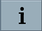

Die Rastmomentkompensation ist eine Antriebsfunktion, die Rastmomente von Synchronmotoren ausgleicht und damit für eine bessere Rundlaufgenauigkeit sorgt. Rastmomente sind eine Eigenschaft des jeweiligen Motors. Somit benötigt jeder Motor eine separate Kompensationstabelle. Während der Lernfahrt werden die Kompensationswerte automatisch ermittelt.
Die Rastmomentkompensation ist geeignet für:
Synchronmotoren
Antriebsobjekte vom Typ SERVO
Software-Option Um diese Funktion zu nutzen, benötigen Sie eine Lizenz für folgende Option: "Rastmomentkompensation" (6FC5800-0_D50-0Yx0) |
Aufruf der Funktion an der Steuerung im Bedienbereich Inbetriebnahme: Softkey "NC" → Menüfortschalt-Taste → Softkey "Rastmomentkompensation". Der Softkey wird erst nach dem Setzen der Option angezeigt.
|  | Die Online-Hilfe zur Rastmomentkompensation am SINUMERIK Operate unterstützt Sie bei der Parametrierung. |
Vorgehensweise:
Lizenzpflichtige Option setzen.
Funktionsmodul für die jeweiligen Achsen im Antriebsinbetriebnahme-Assistenten aktivieren.
Lernfahrt konfigurieren.
Automatisch erzeugtes Teileprogramm prüfen und starten.
Lernfahrt starten.
Kompensationswerte für ausgewählte Antriebsdatensätze (DDS) aktivieren und speichern.
Kompensationswerte anzeigen und prüfen.
Siehe auch:
Rastmomentkompensation - Übersicht